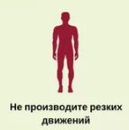

ПРАВИЛА БЕЗОПАСНОСТИ ПРИ НАПАДЕНИИ НА РЕБЕНКА БЕЗДОМНЫХ СОБАК
1. Если Вы видите, что собака приготовилась напасть на ребенка:
- подойдите и твердым голосом отдайте команду "Место", "Стоять!" или "Фу!";
- отступайте с ребенком к укрытию спиной вперед, зовите на помощь окружающих;
- если собака прыгает на Вас - закройте собой ребенка и постарайтесь прижаться спиной к стене дома, для защиты используйте камни, палки.
2. Если Вы видите, что собака бежит за ребенком:
- отвлеките внимание собаки, например, можно кинуть что-нибудь в сторону собаки;
- вооружитесь палкой, камнем;
- закройте ребенка собой и двигайтесь с ним спиной в укрытие, зовите на помощь;
|
|
- научите ребенка не делать резких движений или не пытаться бежать от собаки, потому, что бегущего человека собака воспринимает как добычу, срабатывает инстинкт охоты за добычей; |
|

|
Правила поведения при встрече с собакой: |
|
|
Правила поведения при встрече со стаей бездомных собак: |
|
|
Объясните ребенку простые нельзя: |
Источник и подробная информация о действиях на сайте:
http//www.child-blog.ru
ТЕЛЕФОН СЛУЖБЫ СПАСЕНИЯ: 112